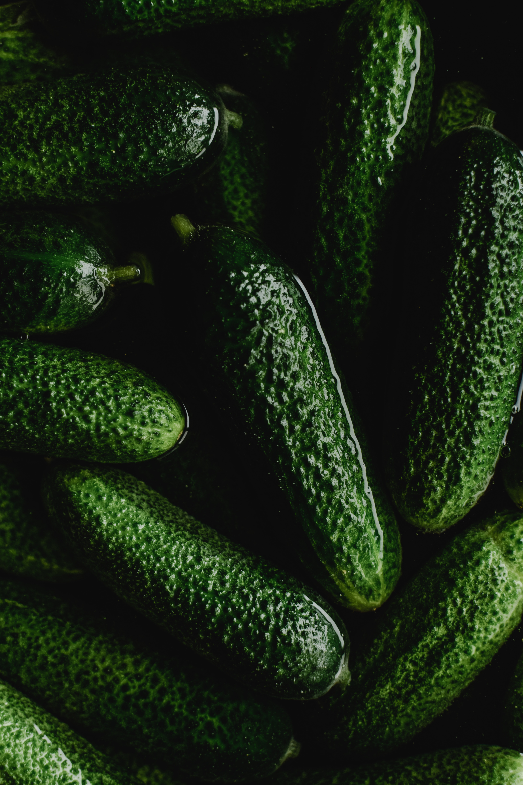

Verdens bedste syltede agurker
Syltede Agurker
Syltede agurker kan bruges til alt, og er nemt at lave. Det tager kun 5 minutter, så hvorfor købe dem, når du kan lave dem bedre selv på 5 minutter. Sidder du og tænker på hvad de kan bruges til? så kommer svaret her. Flæskesteg, flæskestegssandwich, grydestegt kylling, ristede hotdogs og oven på diverse rugbrødsmader. Jeg kunne blive ved. Der er ikke noget det ikke passer til.
